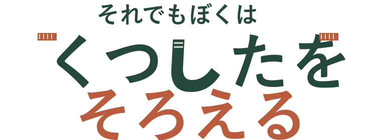
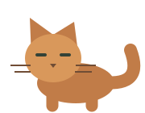

れんしゅう
スタート
→
あそぶひ：
⌄
0 / 30にち クリア
ゲームパークへ もどる
それでもぼくは
くつしたをそろえる。
はじめる
もどる
そろえた
0
/
15
くみ
のこり
00:00
とめる

おかたづけ おしまい
それでも、そろった。
ひとくみずつ。ぜんぶ そろったね。
そろえた
じかん
つぎのひへ
もういちど
タイトルへ
ゲームパークへ もどる
パンの おせんたく
どんなひに する？
もどる
ちょっと ひとやすみ。
じかんも おじゃまも とまっているよ。
つづける
タイトルへ
タイトルに もどると、いまの おかたづけは おしまい。
このゲームでは JavaScript を つかいます。ブラウザーの せっていを かくにんしてね。